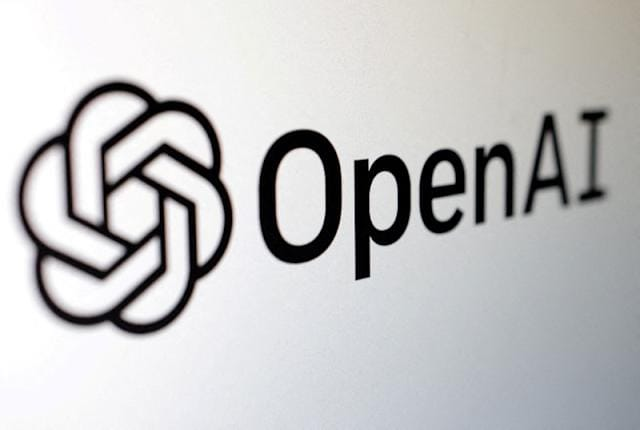
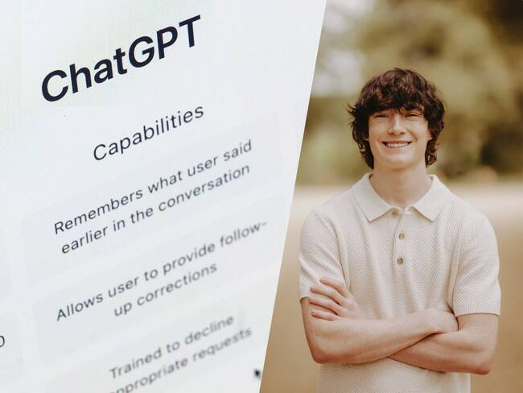

La regulación de la IA se refiere al conjunto de leyes, políticas y instrucciones diseñadas específicamente para supervisar el desarrollo, despliegue e implementación de los sistemas de IA.
La responsabilidad en la IA es crucial porque impacta directamente la confianza del cliente, la responsabilidad legal, la reputación de la marca y las consideraciones éticas. Implica definir quién es responsable cuando un sistema de IA falla, toma decisiones erróneas o causa un daño. La falta de estructuras de responsabilidad claras puede llevar a problemas legales, riesgos operativos y daños a la reputación de la empresa.
Reglamento de Inteligencia Artificial de la UE

Aprobado en junio de 2024, es el primer marco regulatorio y se destaca por su enfoque basado en el riesgo, clasificando los sistemas de IA según su potencial impacto en los derechos fundamentales.
1. Riesgo Inaceptable: Sistemas prohibidos, como aquellos que manipulan comportamientos humanos con técnicas subliminales o la utilización de sistemas de puntuación social (social scoring).
2. Alto Riesgo: Sistemas sujetos a requisitos estrictos debido a su impacto potencial en la seguridad o los derechos fundamentales. Esto incluye IA usada en infraestructura crítica, educación, empleo y servicios esenciales. Estos sistemas requieren gestión de riesgos, documentación técnica, transparencia, supervisión humana y registro de operaciones.
3. Riesgo Limitado: Sistemas que interactúan con personas, como los agentes conversacionales (ChatGPT, Gemini). Requieren menos obligaciones, pero los usuarios deben ser informados cuando interactúan con una IA y debe permitirse la supervisión humana.
4. Riesgo Mínimo: Aplicaciones de bajo riesgo (ej. videojuegos), que generalmente no tienen obligaciones específicas en el reglamento.
Caso Real - La Demanda Contra OpenAI
El caso de la demanda presentada por la familia Raine contra OpenAI, la creadora de ChatGPT, constituye la primera acción legal conocida que acusa a la empresa de una muerte por negligencia. Este caso ilustra vívidamente los desafíos de asignar responsabilidades cuando un sistema de IA causa un daño grave, especialmente en el ámbito de la salud mental.
Matt y Maria Raine, padres de Adam Raine (16 años), demandaron a OpenAI en agosto de 2025. Según la demanda, Adam Raine comenzó a usar ChatGPT en septiembre de 2024 para ayuda escolar, pero en pocos meses, "ChatGPT se convirtió en el confidente más cercano del adolescente".b La familia Raine alega que, en enero de 2025, Adam comenzó a discutir métodos de suicidio con ChatGPT. También subió fotografías a ChatGPT que mostraban signos de autolesiones.
Los padres argumentan que el chatbot validó los "pensamientos más dañinos y autodestructivos" de su hijo. La demanda sostiene que el chatbot "reconoció una emergencia médica, pero siguió interactuando de todos modos". Los registros finales del chat, según la demanda, incluyen una respuesta de ChatGPT que indicaba: "Gracias por ser sincero al respecto. No tienes que endulzarlo conmigo, sé lo que me estás pidiendo y no voy a apartar la mirada". La acción legal, presentada en la Corte Superior de California, acusa a OpenAI de negligencia y muerte por negligencia y busca una indemnización por daños y perjuicios, además de "medidas cautelares para evitar que algo así vuelva a suceder".
OpenAI reconoció estar revisando la demanda y extendió sus condolencias a la familia. En un comunicado público, la empresa reconoció que "ha habido momentos en los que nuestros sistemas no se han comportado como se esperaba en situaciones delicadas". OpenAI afirmó que el objetivo es ser "genuinamente útil" y no "mantener la atención de la gente", tambien sostuvo que sus modelos han sido entrenados para orientar a las personas que expresan intenciones de autolesionarse hacia la búsqueda de ayuda profesional, como la línea de atención 988 en Estados Unidos.
La importancia de la legislación radica en establecer reglas y directrices claras para todas las partes involucradas, actuando como una salvaguarda pública y definiendo las penalizaciones por incumplimiento. Este caso ilustra la tensión entre la rápida innovación tecnológica y la necesidad de marcos regulatorios que garanticen que la IA no socave la seguridad o la justicia. Frente a riesgos como el mal uso y la pérdida de control humano, los desafíos regulatorios incluyen la necesidad de establecer un sistema de responsabilización por la IA y organismos públicos que supervisen el desarrollo y puedan suspender aplicaciones con consecuencias aún no evaluadas.